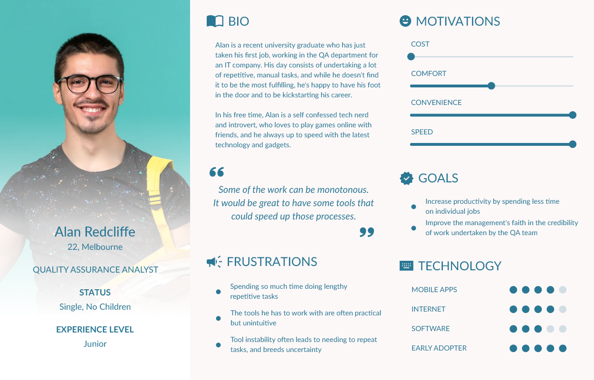
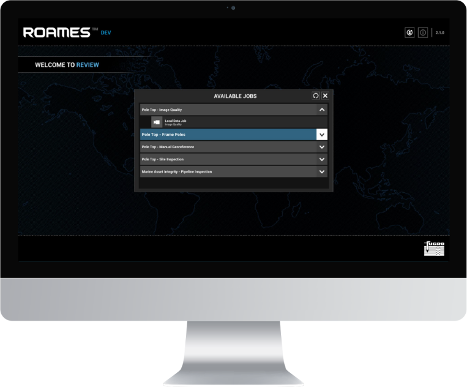
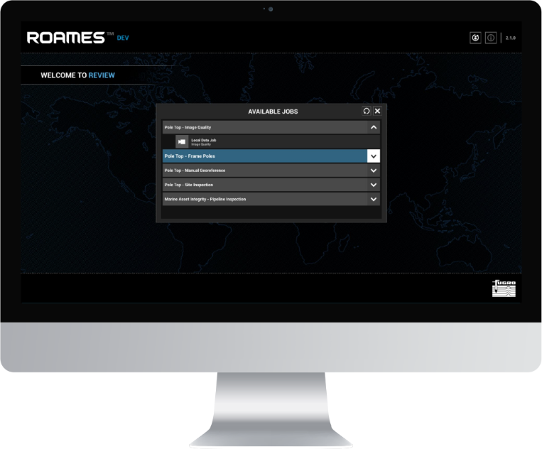

BACKGROUND & OVERVIEW
Ergon Energy, one of Queensland's largest energy companies, have a problem - a big one, literally. How big? Managing and maintaining 178,000 kilometres of state-wide power lines and 1.7 million above ground power poles.
Fugro ROAMES is a technology and engineering company that specialises in high-resolution mapping services and solutions for the electricity distribution sector. They use airborne sensors to generate accurate 3D models of electric power transmission networks and the surrounding vegetation.
THE PROBLEM
Ergon Energy have to undertake campaigns yearly to monitor the condition of their power line network, to document changes and any serious regressions that could lead to a major incident. An example of this would be a damaged pole crossarm breaking, and the power line attached to it becoming free, which could lead to a major fire and endanger the lives of nearby wildlife and residents.
The difficulty is that surveyors often have to drive several hours to perform manual investigations. Their findings are manually recorded in a log book and then transfered to a computer when they get back to the office. Log books can go missing, human error can lead to incorrect recordings, such as mixing up nearby poles, and there is no simple means of a coworker verifying the site findings, which can often be highly opinionated. The process is lengthy, riddled with potential problems, and expensive, given that the process is heavily reliant on the time and expertise of veteran linesmen.
WHO IS THE USER?
Preliminary Research
As Fugro ROAMES had an estabished relationship with Ergon Energy (who previously owned ROAMES), I was fortunate in being able to reach out to Ergon's linesman to conduct in person interviews on-site in our office.
"Quite frankly, we don't have a full overview of our network."
"We have to run 'campaigns' every year to monitor the network for changes, which can take months, and costs us millions of dollars to undertake"
"If a mistake is made or a key detail is overlooked, the consequences can be catastrophic - bushfires and potential human casualties"
"Sending surveyors to manually investigate a pole is very time consuming and can take hours. If we need to do rechecks, it's just eating up time and money"
"We need to signficantly reduce the time of our campaigns, and the expensive need to send out linesmen to do follow up checks on inconclusive network issues."
The interviews revealed several commonalities between the surveyors, such as that they are all in the same age group, use the same company issued equipment, and had similar levels of techincal expertise with different technologies. It became evident that a potential digital solution would have to be on desktops and delivered via the web, as Ergon had a lengthy IT security approval process for new software to be installed, including software updates.
I decided at this point also to start exploring personas

Throughout this process, project stakeholders had proposed the possibility of trying to divert portions of the campaign workflow that required manual work but less technical oversight to QA departments, as a cost saving measure

DESIGN
With the intial research completed and the high level proposal for a technical solution out of the way, it was time for me to work with the engineers on a workflow for the application. We invited some of the linesmen to come work with us on site at our office three days a week to ask them questions and get a deeper understanding of their work process, and what these lobby 'tasks' would logically look like.
Some examples tasks they proposed were: identifying the best front and back photo attributed to each pole from the helicopter (to assess whether the quality was high enough to make an informed decision), making sure the photos were attributed to the correct pole, identifying all the component parts making up that particular pole, and then of course, trying to identify if there were any hazards and how severe they were.
I came up with the concept of a 'lobby' system, whereby a linesman can log into the service and find a list of open work tasks or 'jobs' needing to be completed.

One of my goals for the system's design architecture was to create common UI components that would be reusable, regardless of the job type. I attempted to illustrate the workflow and how the interaction between universal and job specific UI elements would work.
After showing the initial screen mockup to some of the users, I received a very important piece of feedback for the user experience:
'Can it be 'dark mode' by default? My eyes will get easily strained if I have to stare at the same bright interface all day.'
 

My revised 'dark' design was plauded for being easy to use, and I decided to design all of the job interfaces natively for a dark version. Initially I had considered doing both dark and light versions for each interface to give users a choice, but the value proposition didn't match the development overhead.
I wanted to keep pushing the intuitivity of the application as a whole, and decided to program a custom animation system for the project in Unity, with easily reusable, chainable components, so that every user action would have a visual feedback to help them to understand what they need to do next. You can see this in active use in the text and icon animations in this video of a job example:
DELIVERY
Ergon was extremely happy with the scope of our solution. They were able to reduce their annual campaign work down to several months saved and significantly reduced their operational costs in the process. The result was a saving of several million AUD. Fugro ROAMES was then successful at winning a tender for Essential Energy in New South Wales under very heavy competition to undertake similar work for their power network. The overall project outcome was considered a major success for Fugro ROAMES.
Fugro ROAMES also won additional contract work with Fugro's Western Australian office to implement a similar solution for the marine asset integrity projects. I was once again directly involved and designed all the interfaces and flows for the new job types, in remote consultation with their engineers.